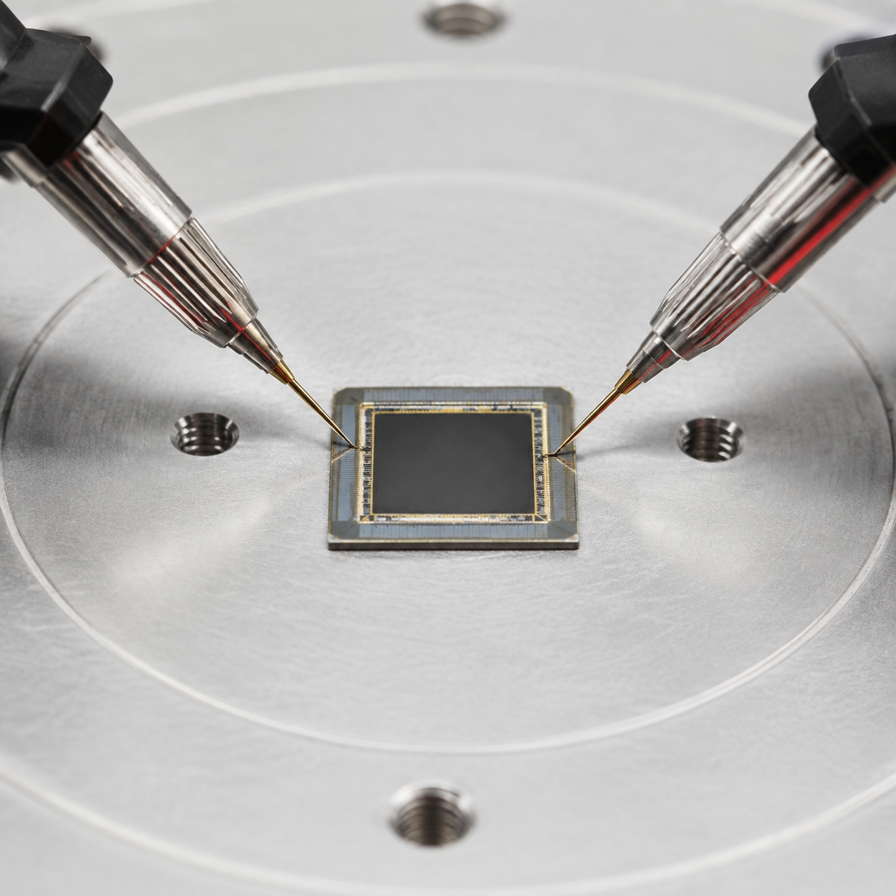
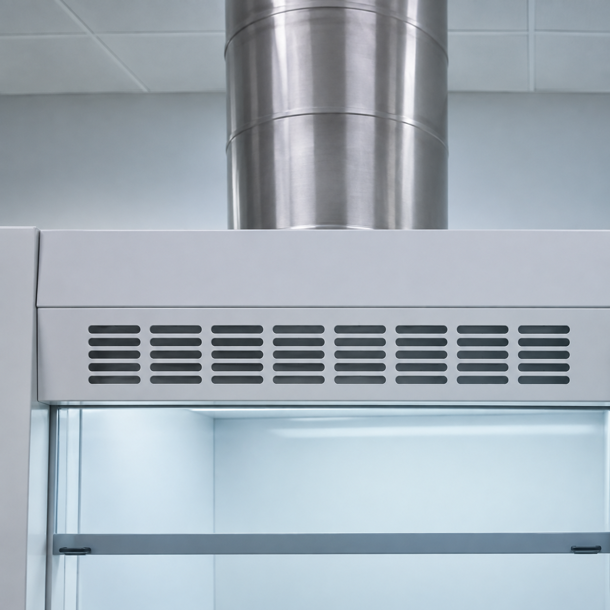

材料合成与制备Material Synthesis & Fabrication
- 加热套 — ZNCL-TSHeating mantle — ZNCL-TS
- 可调式混匀仪 — MX-SAdjustable mixer — MX-S
- 台式离心机 — HT185Benchtop centrifuge — HT185
- 真空泵 — 2XZ(S)-2Vacuum pump — 2XZ(S)-2
- 分析天平 — MA204Analytical balance — MA204
- 电动冲片机 — CP-25-IIIElectric disc punch — CP-25-III
- 鼓风干燥箱 — DHG-9030AForced-air drying oven — DHG-9030A
- 加热磁力搅拌器 — RET（6 台）Heating magnetic stirrer — RET (6 units)
- 加热磁力搅拌器 — 2XZ(S)-2Heating magnetic stirrer — 2XZ(S)-2
- 磁力加热搅拌器 — S10-3（2 台）Magnetic heating stirrer — S10-3 (2 units)
- 高真空镀膜机 — GT400AHigh-vacuum coating system — GT400A
- 3D 打印机 — HEIDSTAR3D printer — HEIDSTAR
- 单工位手套箱 — LG1200/750TS-A、LG1200/750TS（各 1 台）Single-workstation glovebox — LG1200/750TS-A and LG1200/750TS (1 unit each)
- 双工位手套箱 — LG2400/750TS（2 台）Dual-workstation glovebox — LG2400/750TS (2 units)
- 行星式搅拌脱泡机（1 台）Planetary mixing and defoaming machine (1 unit)
光学、结构与颗粒表征Optical, Structural & Particle Characterization
- 视频显微镜 — s/n0410041213040097Video microscope — s/n0410041213040097
- 显微镜 — S2III-1000Microscope — S2III-1000
- 显微镜成像系统 — R5 Mark II（8K 视频）Microscope imaging system — R5 Mark II (8K video)
- 激光粒度分析仪 — winner2005ALaser particle size analyzer — winner2005A
- 红外探测器（1 台）Infrared detector (1 unit)

器件、电学与力学表征Device, Electrical & Mechanical Characterization
- 轴台 — HDS201602H15SMotorized stage — HDS201602H15S
- 压电转台 — HDS-SRP U80REPiezoelectric rotation stage — HDS-SRP U80RE
- 直线电机/压电驱动装置 — HDS-SAMR-SLP.X150DRV01Linear motor / piezo drive system — HDS-SAMR-SLP.X150DRV01
- 精密位移台 — HDS201602H14SPrecision translation stage — HDS201602H14S
- 压电放大器 — TEGAMPiezoelectric amplifier — TEGAM
- 万用表 — U1241BDigital multimeter — U1241B
- 源表/数字源表 — 2450（3 台）Source meter / digital source meter — 2450 (3 units)
- 宽频带 DSP 锁相放大器 — 7280Broadband DSP lock-in amplifier — 7280
- 电流前置放大器 — SR57/SRSCurrent preamplifier — SR57/SRS
- 万能试验机主机 — UTM2102HAUniversal testing machine — UTM2102HA
- 高斯计 — BST600Gauss meter — BST600
- 双路直流稳压稳流电源 — DH1718E-4Dual-channel DC regulated power supply — DH1718E-4
- 示波器 — MSO5104HDOscilloscope — MSO5104HD
X 射线表征X-ray Characterization
- X-RAY 检测设备 — X8800X-ray detection equipment — X8800
- X 射线剂量仪 — RaySafe X2Solo-r/FX-ray dosimeter — RaySafe X2Solo-r/F

实验室辅助与环境控制Laboratory Support & Environmental Control
- 废气处理器 — HL-HXT80、HL-HXT45（各 1 台）Exhaust gas treatment unit — HL-HXT80 and HL-HXT45 (1 unit each)
- 通风柜 — 1500 × 900 × 2350，MY-TFG（4 台）Fume hood — 1500 × 900 × 2350, MY-TFG (4 units)
- 通风药品柜 — 900 × 500 × 2350，MY-TFYPGVentilated chemical cabinet — 900 × 500 × 2350, MY-TFYPG
- 通风柜自控传感器 — MY-BYZKXT（4 台）Fume hood automatic-control sensor — MY-BYZKXT (4 units)
- 空气净化器 — 净化器 Pro、小米净化器 Pro（各 1 台）Air purifier — Purifier Pro and Xiaomi Air Purifier Pro (1 unit each)
- 风机变频控制箱 — MY-BPKZXFan variable-frequency control cabinet — MY-BPKZX
- 实验室配电箱 — MY-PDXLaboratory distribution box — MY-PDX
- 冰箱 — BCD-637WRefrigerator — BCD-637W
- 实验控制微机 — DELL 7060MT/SFFLaboratory control computer — DELL 7060MT/SFF